Workflows in Git and GitHub
Aims and Objectives
Developing a project in Git and GitHub can be messy, especially when collaborating within a team. Overlapping commits can lead to merge conflicts and a convoluted commit history. Establishing a consistent branch-based workflow can help alleviate these concerns. This skills session will use directed, interactive lessons to provide NOAA Fisheries staff with a foundation in using branching strategies to streamline project development and tailor it to your team’s size and needs.
Prerequisites: What do I need before this workshop to follow along on my own?
- This stand-alone skills session is meant for those with a basic understanding of Git and GitHub. Check out our Introduction to Git and GitHub lessons if you are new to Git and GitHub or need a refresher.
- Git workflows are based around the concept of branching. If you are not familiar with branches, be sure to take a look at our Branches and Pull Requests lesson.
Git Workflows for Development and Collaboration
Tutorial: Practice with Workflows
GitHub Skills: Create a release-based workflow
We’ll be using the Create a Release-based Workflow Skills Tutorial to practice using a GitHub Flow-style workflow with releases. Follow along with the tutorial using your own GitHub account.
Step 1: Start the course
Open the GitHub Skills link, and make sure you are logged into GitHub. Use the “Start course” button to make a new repository on your account:

When you open up the “Star” link, you will be presented with the “Create a new repository” interface. Keep all of the defaults, and click the green “Create repository” button:
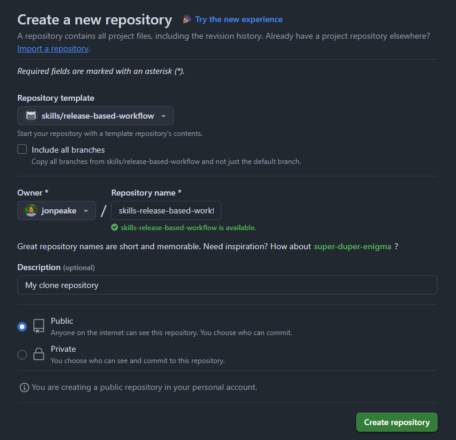
These actions use “minutes”, which are limited in a private repository, but unlimited in a public one. We suggest keeping your GitHub Skills tutorial repositories public to avoid any minutes limitations.
GitHub Actions can take a little bit of time to run, so waiting this requisite time is important! Refresh the instructions after 20 seconds to make sure everything updates properly.
Step 2: Start the exercise
After waiting the suggested 20 seconds, refresh the repository, and click the “Go to Exercise” button in the README
I suggest moving the instructions tab into another window so you can work side-by-side with the instructions to limit switching back and forth between tabs.
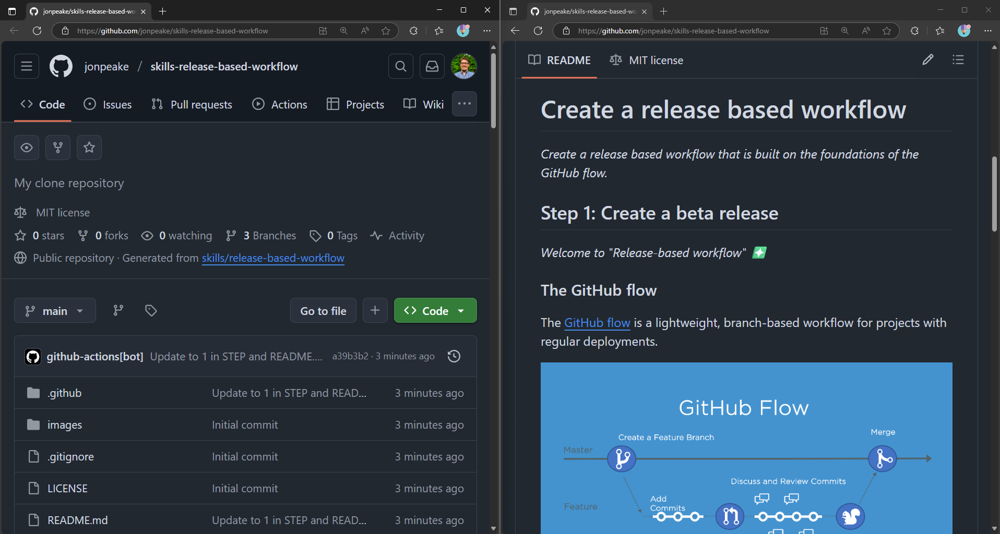
Step 3: Follow the exercise
Create a beta release
In this exercise, we will be creating a release-based workflow that is built on the foundations of GitHub flow.
- Go to the Releases page for the repository. If you are in a condensed view mode, this link will be at the bottom of the Code page. If you’re viewing in a full-sized window, this page will be in the sidebar on the right-hand side of the repository window on the Code page.

- Click the green Create a new release button to start a new new release
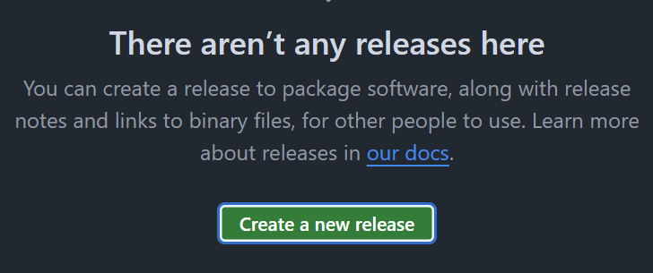 - Click the Tag: Select tag dropdown, and specify a release number. Use v0.9 for this example. Click Create new tag: v0.9 on publish.
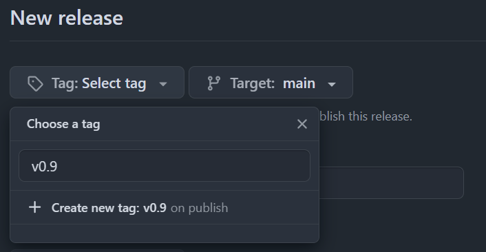 - Give the release a title, and an optional short description. Check the box next to Set as a pre-release.

- Click the green Publish release button to finalize your pre-release.
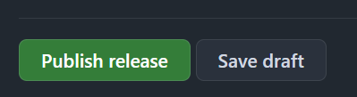
Introduce a bug to be fixed later
Next, we’ll add a bug to our code that will be fixed later in this tutorial.
- At the top of the repository, click on the Pull requests tab and click the green New button (if you’re in the full window view, this will say New pull request).
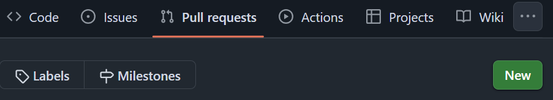 - Set the base: dropdown menu to
release-v1.0and the compare: dropdown menu toupdate-text-colors, and click the green Create pull request button.
- Update the pull request title to “Updated game text style”. Optionally add a more detailed description to your pull request. Click the green Create pull request button.

- Merge the pull request, wait about 20 seconds for the instructions to refresh, and refresh the instructions README page.
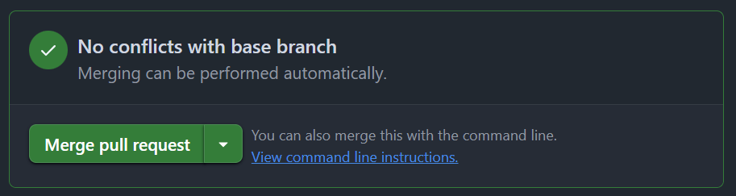
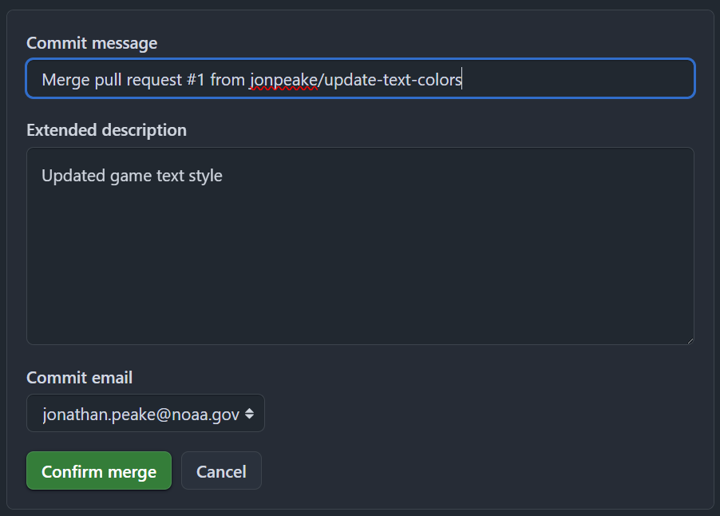
Add a new feature to the release branch
We’ll be using the release-v1.0 branch to add features to our repository. We can treat this branch as a long-lived but ephemeral branch in the spirit of GitHub Flow.
- In the Code tab, create a new branch off of the
mainbranch. This will be our “feature” branch. Name your branchfeature-background.
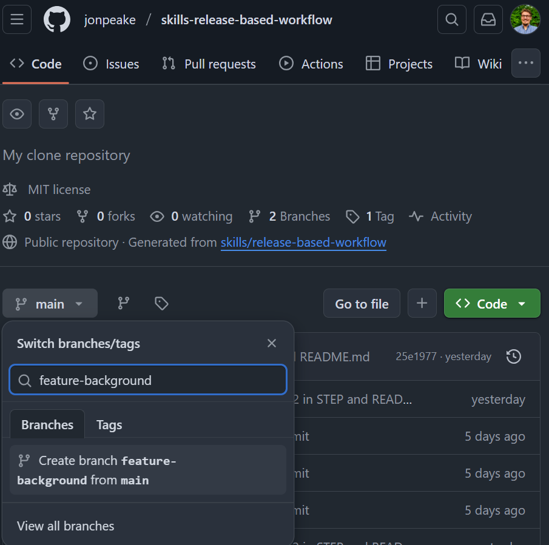 - Open the
base.cssfile, and click the “edit this file” button (it should look like a pen in the upper right hand corner of the code chunk. Scroll down to line 109. In thebodydeclaration, add a line that changes the background color to black using thebackground-color: black;line as shown in the tutorial.

- Commit your changes, updating the commit message to be more descriptive.
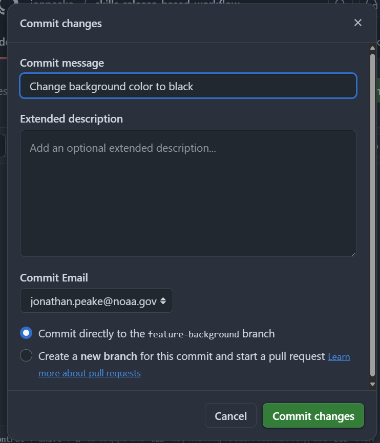 - Navigate to the Pull requests tab, and create a new pull request. Set the base branch to
release-v1.0and the compare branch tofeature-background. Click the green Create pull request button, and fill in the pull request template. Click the Create pull request button to finalize the pull request.

- Merge the pull request and delete your feature branch.

- Wait about 20 seconds for GitHub Actions to update, then refresh the instructions README page.
Open a release pull request
Opening a pull request early in the release can help facilitate discussion about the release. Any commits added to the compare branch after opening the pull request will be associated with that pull request until it’s closed.
- In the Pull requests tab, open a new pull request with
base: mainandcompare: release-v1.0. You can do this from the “release-v1.0 had recent pushes” banner to save time.
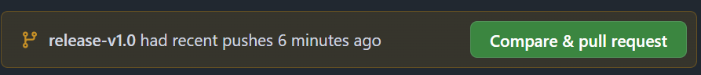 - Add some detail to your pull request body description, and click the green Create pull request button. Don’t merge your pull request yet!

- Wait 20 seconds for GitHub Actions to update, then refresh the instructions README page.
Generate release notes and merge
You can generate release notes automatically based on the content of your pull request. Let’s practice this with our “Release v1.0” pull request.
- Navigate to the Releases page from the Code tab of your repository (see above if you need a reminder of how to get there).
- Click the Draft a new release button in the top right corner.
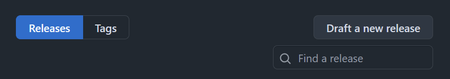 - In the Tag: dropdown menu, type v1.0.0, and create a tag with that name. Change the Target: dropdown to select the
release-v1.0branch.
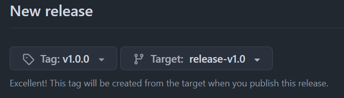 - Click the Generate release notes button at the top of the description box.

- Review your release notes and make any changes if necessary.

- Set the Target: branch back to
main(we only needed the release branch to generate our release notes).

- Click the Save draft button (not the Publish release button; we’ll publish in the next step).
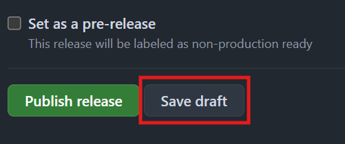 - Open your Release v1.0 pull request on the Pull requests tab.

- Merge your pull request.

- Wait 20 seconds for the GitHub Actions to update, then refresh the instructions page.
An aside on semantic versioning
This release workflow uses a system called semantic versioning, which is a convention for specifying compatibility. It uses a three-part version number: major version, minor version, and patch.

Finalize the release
- From the Code page, navigate to the Releases page. Click the edit button next to your v1.0.0 release.

- Ensure the Target branch is set to main
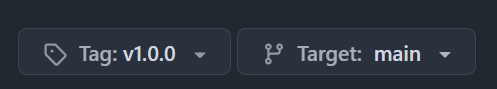 - Scroll to the bottom of the page, and click Publish release.
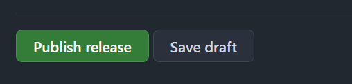 - Wait 20 seconds for the GitHub actions to update, then refresh the instructions README page.
Commit a hotfix to the release
We can make a short-lived, ephemeral branch to fix a bug. The tutorial has already introduced a bug (we did this in the first part of the tutorial), and created a feature branch (fix-game-background) and a hotfix release branch (hotfix-v1.0.1) for us that fixes the bug. Let’s make a pull request to introduce this bug fix into our repo.
- In the Pull requests tab, open a pull request setting
hotfix-v1.0.1as thebasebranch andfix-game-backgroundas thecomparebranch.
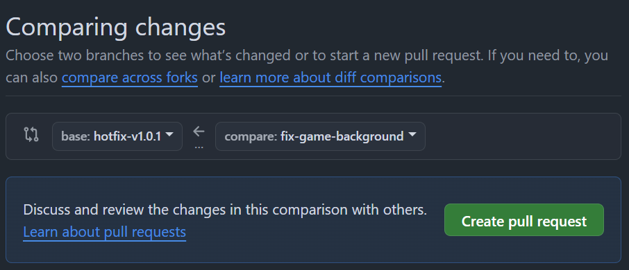 - Add a description to the pull request body, and change the title of the pull request to “Hotfix for broken game style”. Create your pull request and merge it into our
hotfix-v1.0.1release branch.
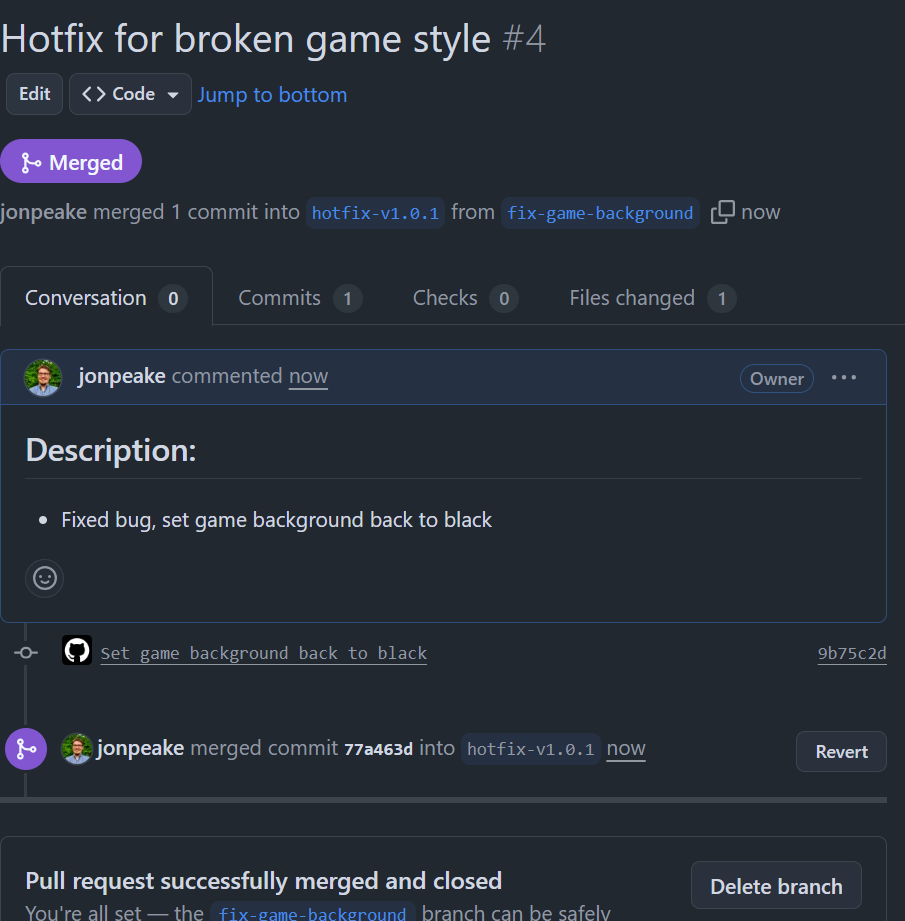 - Open a new pull request with
mainas thebasebranch andhotfix-v1.0.1as thecomparebranch.

- Add a detailed description to the pull request body.
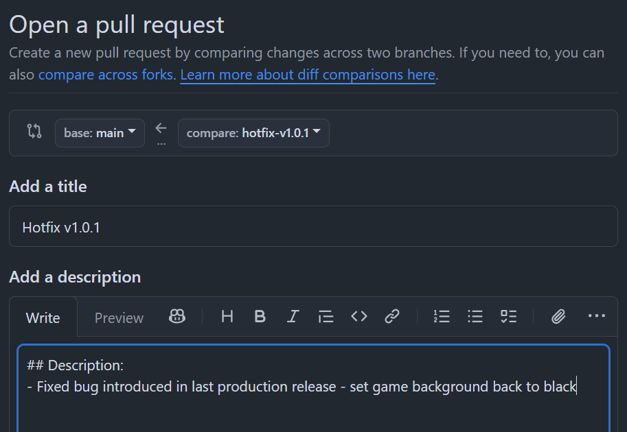 - Create and merge your pull request into the
mainbranch.
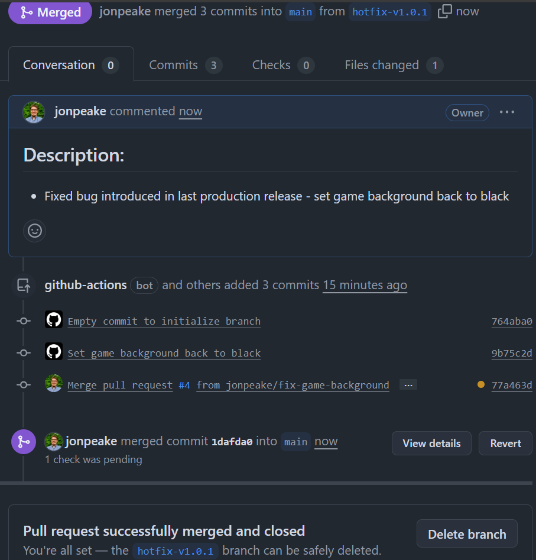 - Wait 20 seconds for GitHub Actions to update, then refresh the README.
Create release v1.0.1
The final step is incorporating our hotfix changes into a new release to distribute to the necessary channels.
- Navigate to the Releases page from the Code tab, and click the Draft a new release button.
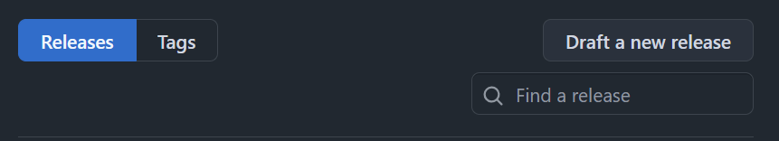 - Set the Target branch to
mainand add av1.0.1tag to follow semantic versioning. Click Generate release notes to auto-populate the release title and notes. Review the release notes, and customize if desired.

- Click Publish release at the bottom of the page. Wait 20 more seconds for the tutorial README to update, then refresh the instructions.
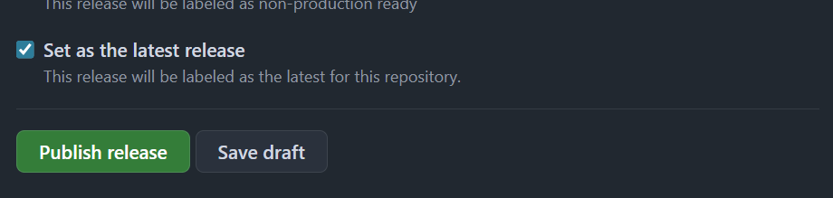 - You’re finished with the tutorial! Now that you have practiced with a release-based workflow, feel free to experiment with other workflows and select the one that works best for your project and team.